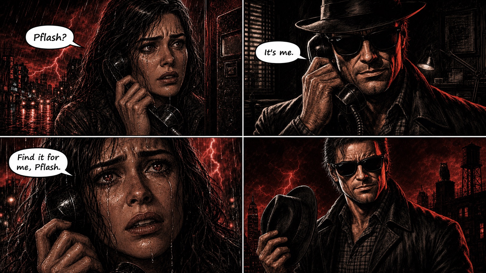
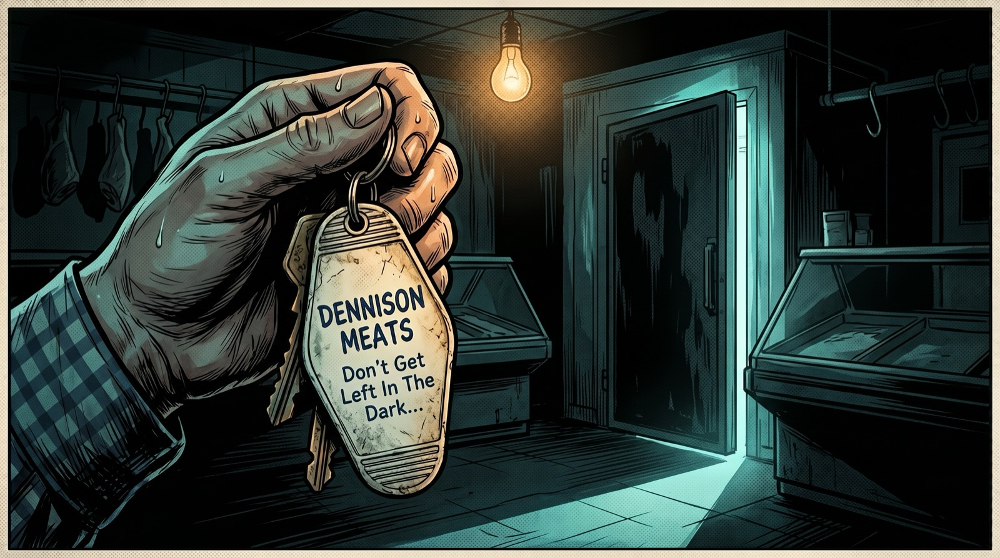

Where did your crypto go?
Find out in 60 seconds.
Your money leaves a trail on the blockchain — public, permanent, impossible to fake. This is what a wallet really looks like. Now look at yours.
“Find it for me.”
Whatever happened to your crypto — an investment gone quiet, a friend who says he's holding it, a night you'd take back — you just want it found. That's the call Phantom Flash answers.

How it works
Three steps. The first one is free, takes sixty seconds, and shows you what's actually on the chain.
Paste the address
The wallet address you've been sending funds to — from your exchange, your broker, your trading platform, or your own wallet that funded it. Phantom Flash pulls the live blockchain record on the spot.
PFLASH it — free
Seconds later, the wallet is rendered as an interactive 3D system: your target at the center, every first-hop counterparty orbiting it, real transactions on every connection. Fly around. See for yourself.
Choose your report
Need it now? The PFLASH-IT Report ($271) traces your money at machine speed from one upload. Building a case? The Full Owlchained Report ($2,717.17) is the hand-built investigation — evidence package, case narrative, and a call with a real human.
The chain never sleeps.
Neither does Phantom Flash.
Phantom Flash finds your crypto — whether it's tied up in an investment, a friend is holding it, someone took it, or you just want to see where it went. Paste the wallet and watch the chain show you.
Two reports. One truth.
Need the answer now? PFLASH-IT. Building a case? Go Full Owlchained. Same chain, same truth — you choose the depth.
One upload. Machine speed. Now.
- Paste the wallet, add one document — that's all it takes to start
- Automated multi-hop trace of your funds — wallets, transactions, convergence points
- Interactive web report: tracing board, wallet inventory, key findings
- Exchange & service identification — where your money actually landed, named
- PFLASH speed — most reports delivered same day
- $171 per update as your case develops
The full investigation — built by hand, chained down.
- Everything in the PFLASH-IT Report, plus:
- Hand-built investigative workup — every hop verified, whatever the truth turns out to be
- The Story — your money's journey as a plain-language case narrative
- Evidence package formatted for IC3, FBI, Secret Service, and state law enforcement
- A call with a real human — walk the findings and next steps together
- Delivered in 5–7 business days
⚡ Traced a six-figure transfer through ATM, processor, and relay wallets into a
single controlled hub — convergence evidence now in front of law enforcement.
⚡ Multi-source retirement-fund movement reconstructed across 100+ transactions into a
clean, documented timeline and exchange-escalation package.
Run the free PFLASH first. If the address has activity, you'll see the first hop of your money — for free — before you decide anything.
See exactly what you get
Every Full Owlchained Report is a private interactive web report — not a PDF attachment. Here’s the actual structure, shown with a fictional case. Yours is built from your wallet’s real trail.
The Story
How the scheme actually worked — the narrative of your money’s journey, told in plain language, start to finish.
“The platform showed a balance of $213,000. The chain showed the deposits leaving within hours…”
Tracing Map
Every hop, visualized — an interactive flow of your funds from your wallet to where they actually landed.
4 hops · 11 wallets · 1 convergence point
Wallet Inventory
Every address documented — role, volume, first/last activity, and how it connects to your funds.
$48,200 in · 3 hops from your wallet · role: relay
Key Findings
What matters, in plain language — the conclusions, the evidence behind each one, and what they mean for you.
Evidence Package
Formatted for law enforcement — IC3-ready summaries, transaction IDs, exchange escalation contacts, timeline.
■ exchange escalation letter · ■ timeline
Sample shown with fictional data. The PFLASH-IT Report ($271) delivers the tracing map, wallet inventory, and key findings — machine-built at PFLASH speed. The Story and the Evidence Package come with the Full Owlchained Report.
This is what $2,717.17 buys.
Get my report →
Before you send another dollar — PFLASH the wallet.
Sixty seconds. One address. The live blockchain record, right in front of you.
PFLASH IT ⚡